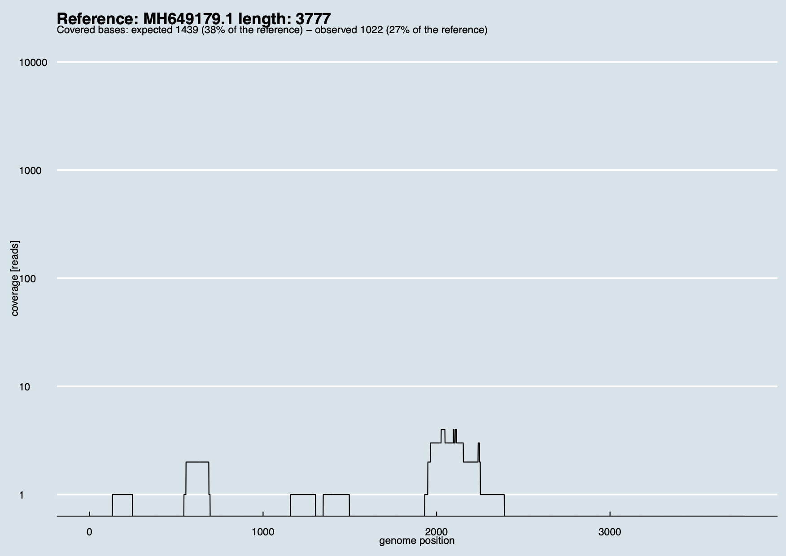

Inspecting the results: covplot
Covplot
After a run of Wolfpack, the orgs_list.tsv files show
how many reads per sample are assigned to a given viral organism, and
(unless --nocovplot is requested), the tool also creates coverage plots
for a few viral organisms of interest, given that:
- ≥3 sequencing reads match a specific viral organism.
- The weighted mean coverage score for a viral organism is ≥10%.
- The viral organism is not a phage nor a non-human virus.
See documentation of Virus scan for more information.
In some cases, however, users may be interested in generating coverage plots of other viral organisms, even if such organisms don't meet the mentioned criteria.
For that, they can use the subcommand virmet covplot.
Information on how to use it can be obtained with -h:
virmet covplot -h
usage: virmet covplot [options]
Options:
-h, --help show this help message and exit
--outdir [OUTDIR] path to store the coverage plots
--organism ORGANISM ssciname of the organism of interest
--dbdir [DBDIR] path to find and use the Virmet database
Importantly, users must specify the virmet_output_RUN_NAME/SAMPLE_NAME with
--outdir. Otherwise, VirMet doesn't know where to look for the analysed
mNGS outputs. The resulting coverage plots will be saved in the same folder.
Covplot also requires users to specify the ssciname of the organism of
interest, which can be found in the orgs_list.tsv file.
To create coverage plots, VirMet will assume that the viral database
is stored into /data/virmet_databases and follows the usual VirMet
structure. If another path should be considered, users must specify it with
--dbdir.
Example
As an example, let's suppose users want to investigate sample ABC-DNA_S9 in the
directory virmet_output_Exp01. First, they go to the directory
virmet_output_Exp01/ABC-DNA_S9 and check which coverage plots have already
been created automatically by VirMet Wolfpack.
They see the following:
virmet_output_Exp01/
├── ABC-DNA_S9
│ ├── Virus_X/
│ │ └── Virus_X_coverage.pdf
│ ├── unique.tsv.gz, viral_reads.fastq.gz, undetermined_reads.fastq.gz
│ ├── orgs_list.tsv, stats.tsv, fastp.html
│ └── Others.err
├── run_reads_summary.tsv
└── orgs_species_found.tsv
After that, users may inspect the orgs_list.tsv file and look for
any other interesting viruses that didn't meet the above criteria but may
still be worth considering.
species accn reads stitle ssciname covered_region seq_len
Tunavirus T1 MK213796.1 455 Phage T1 Escherichia phage T1 30152 48836
Virus X XX123412.1 79 Virus X, isolate R Virus X 321 137741
Coronavirus BCoV XX000111.1 40 Coronavirus ABC Bovine coronavirus 141 9372
Users know that Virus X seems to be a good candidate and inspect the created coverage plot (Virus_X_coverage.pdf).
However, they think that Bovine Coronavirus may also be interesting.
Therefore, they run:
virmet covplot --outdir virmet_output_Exp01/ABC-DNA_S9 --organism "Bovine coronavirus".
The subcommand covplot will perform the following steps:
- Identify all mappings read-organism where the organism name starts with "Bovine coronavirus",
- Identify the genome (or strain of this organism) with the highest number of reads mapped,
- Align all viral reads to it,
- Compute the coverage, write it to
depth.txtand plot it.
The final result is a pdf file with the name Bovine_coronavirus_coverage.pdf, saved into:
virmet_output_Exp01/ABC-DNA_S9/Bovine_coronavirus.
This allows users to see how reads spread across the genome of this virus and to determine whether it could be a true positive or whether it is just an artifact or contamination.
An example of a coverage plot generated by VirMet would be the following:
